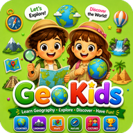

Por qué la geografía importa a los niños — y cómo enseñarla en casa
A menudo se reduce la geografía a memorizar capitales, pero para un niño es mucho más. Es como aprende a orientarse, a leer un mapa, a entender el tiempo, a preguntarse de dónde viene su comida y a imaginar la vida de los niños al otro lado del mundo. Enseñada con juegos y lugares reales, desarrolla a la vez el pensamiento espacial, la curiosidad y la empatía.
- Lo que la geografía aporta a los niños
- Qué aprender a cada edad
- Empezar cerca de casa
- Ocho actividades para que la geografía sea divertida
- Errores que conviene evitar
1. Lo que la geografía aporta a los niños
- Pensamiento espacial: leer un mapa es imaginar el espacio visto desde arriba y calcular distancias y direcciones. La misma habilidad sirve en geometría y en la vida diaria.
- Entender el mundo que le rodea: por qué llueve en invierno, por qué unos lugares son desiertos y otros bosques, por qué las ciudades crecen junto a los ríos y las costas.
- Curiosidad y conexión: saber dónde están los países da sentido a las noticias, los cuentos y los partidos de fútbol.
- Empatía: descubrir cómo viven, comen, juegan y van al colegio otros niños hace que el mundo parezca menos extraño y más compartido.
2. Qué aprender a cada edad
| Edad | Objetivo | Ejemplos |
|---|---|---|
| 4–6 años | Cerca y lejos, mis lugares | Casa, calle, colegio; izquierda y derecha; planos ilustrados sencillos; tierra y mar en un globo |
| 6–8 años | Mapas y visión de conjunto | Los 7 continentes y los 5 océanos; leer un mapa sencillo con leyenda; norte, sur, este y oeste; estaciones y tiempo |
| 8–10 años | Países y paisajes | Países, capitales y banderas; montañas, ríos, desiertos; climas; de dónde vienen los alimentos y productos |
| 10–12 años | Cómo funciona el mundo | Latitud y longitud, husos horarios, población, cómo las personas transforman el paisaje, proteger el medio ambiente |
3. Empezar cerca de casa
Los niños entienden mejor los lugares lejanos cuando antes entienden el suyo. Empieza por el dormitorio, la calle y el camino al colegio, y después amplía el círculo: la ciudad, la región, el país, el continente.
Marruecos es un ejemplo maravilloso para explorar con niños: un país entre el mar Mediterráneo y el océano Atlántico, con las montañas del Atlas, el desierto del Sáhara, ríos, bosques y animadas ciudades costeras. En un solo mapa, el niño encuentra casi todos los tipos de paisaje que estudiará después en el mundo. Vivas donde vivas, el método es el mismo: encontrar tu casa y luego mirar lo que la rodea.
4. Ocho actividades para que la geografía sea divertida
- Búsqueda del tesoro con direcciones: «Da tres pasos hacia el norte y luego dos hacia el este». Usa una brújula sencilla o la del móvil.
- Geografía en la cocina: mirad de dónde vienen la fruta, el arroz, el té o el chocolate, y buscad esos países juntos en un mapa.
- Diario del tiempo: una semana dibujando el tiempo cada día y después comparándolo con una ciudad de otro clima.
- Postal del mundo: elegid un país, buscad tres datos y una foto de la vida diaria de un niño allí, y «enviad» una postal a la familia.
- Memoria de banderas: parejas de cartas con banderas y nombres de países; hablad de los colores y los símbolos.
- Gira el globo: haz girar un globo, páralo con el dedo y di si has caído en tierra o en mar, en qué continente y qué tiempo hará allí.
- Mapa de plastilina o masa de sal: modelad las montañas, ríos y costas de vuestro país y pintadlos. El relieve se entiende mucho mejor cuando se puede tocar.
- Planear un viaje: preparad un viaje real o imaginario con un mapa: ruta, distancia y qué llevar según el clima.
5. Errores que conviene evitar
- Solo memorizar capitales. A algunos niños les divierte el reto, pero la geografía consiste en entender lugares, no en recitar nombres.
- Empezar demasiado lejos. Los pequeños necesitan su casa y su ciudad como referencia antes de que los continentes lejanos tengan sentido.
- Usar un solo tipo de mapa. Los planisferios deforman los tamaños: los países cercanos a los polos parecen mucho más grandes. Compara de vez en cuando con un globo.
- Olvidar a las personas. Paisajes y fronteras importan, pero lo que más conecta a los niños es cómo viven otras personas.
Recursos de geografía gratis en Kids Learning Hub
Pon a prueba lo que sabe tu hijo con nuestros juegos Capitales del mundo y Banderas, e imprime nuestras fichas de continentes y banderas para colorear y rotular en casa.

Explora continentes, países, banderas y paisajes con juegos y un atlas interactivo — sin conexión y gratis.
Empieza con el plano del dormitorio, luego la calle y después el mundo. Cada lugar que un niño sabe encontrar en un mapa se convierte en un lugar que le importa un poco más.
Preguntas frecuentes
¿Por qué es importante la geografía para los niños?
Desarrolla el pensamiento espacial y la lectura de mapas, ayuda a entender el tiempo, los paisajes y el origen de los alimentos y productos, y fomenta la curiosidad y la empatía hacia otras personas.
¿A qué edad empezar con la geografía?
Desde los 4 años aproximadamente, empezando por la casa, la calle y el colegio. Los continentes y océanos suelen llegar entre los 6 y los 8, y los países, capitales y climas entre los 8 y los 10.
¿Cómo enseñar geografía en casa sin libro de texto?
Dibujad planos del dormitorio y del barrio, jugad a buscar tesoros con la brújula, averiguad de dónde viene la comida, llevad un diario del tiempo y planead viajes imaginarios con un mapa.